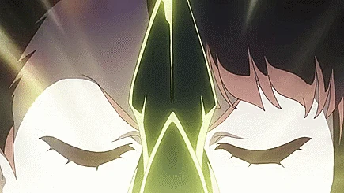
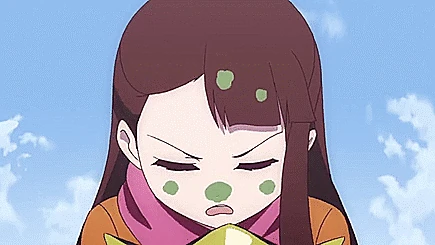
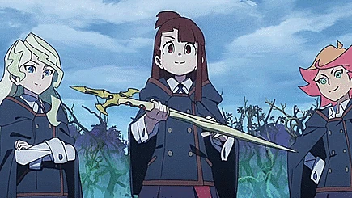
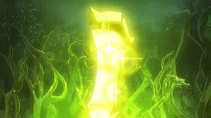

Las Siete Palabras de Arcturus
Nombre: Primera Palabra
Encantamiento: ノット オーフェ オーデン
フレトール
Pronunciación: Noctu Orfei Aude Fraetor
Significado: Esfuérzate por tu lugar ideal
Efecto: Transforma la Claiomh Solais en un arco
capaz de abrir portales a través de las líneas ley y destruir
monstruos con una flecha certera.
Episodio: Un Nuevo Comienzo
Nivel de Poder Normal (Portal ver.)

Nivel de Poder Sobrecargado

Nivel de Poder Final

Nombre: Segunda Palabra
Encantamiento: フェドアリー アフェルゴー
Pronunciación: Phaidoari Afairynghor
Significado: No obtienes lo que sueñas,
obtienes lo que trabajas
Efecto: Convierte la Claiomh Solais en un hacha
gigante que permite ataques frontales poderosos.
Episodio: El Camino a Arcturus
Nombre: Tercera Palabra
Encantamiento: アライアリーラ
Pronunciación: Arae Aryrha
Significado: No te compares con los demás, haz
lo que solo tú puedes hacer
Efecto: Transforma la Claiomh Solais en un
gancho de agarre que permite sujetar y mover objetos grandes.
Episodio: El Camino a Arcturuss
Nivel de Poder Gancho de agarre

Nivel de Poder Metamorphosis ver.
Nombre: Cuarta Palabra
Encantamiento: マエナブディシィブード
Pronunciación: Mayenab Dysheebudo
Significado: Para lograrlo, la paciencia es
importante
Efecto: Convierte la Claiomh Solais en un
rociador que mezcla y dispersa líquidos rápidamente.
Episodio: Inteligencia y Sensibilidad

Nombre: Quinta Palabra
Encantamiento: シビラデューラ
レラディヴューラ
Pronunciación: Sybilladura Lelladybura
Significado: Cuando lo tradicional y lo moderno
se mezclan, se abre la puerta a un mundo invisible
Efecto: Transforma la Claiomh Solais en una
escoba mágica de gran velocidad.
Episodio: Inteligencia y Sensibilidad
Nivel de Poder Base

Nivel de Poder Escoba Multiple

Nombre: Sexta Palabra
Encantamiento: リュオーン
Pronunciación: Lyonne
Significado: Gracias
Efecto: Libera un hechizo curativo poderoso.
Episodio: Inteligencia y Sensibilidad

Nombre: Séptima Palabra
Encantamiento: ファサンシール シェアリーラ
Pronunciación: Phasansheer Shearylla
Significado: Conéctate con otras personas, y
tus sueños crecerán
Efecto: La Claiomh Solais se fusiona con el
Grand Triskellion, formando una cruz dorada capaz de usar magia
que altera el mundo y mejora las transformaciones anteriores.
Episodio: El Camino a Arcturus
Hechizos Conocidos
Nombre: Hechizo de Anulación
Encantamiento: アインアインソフ
アインソフオウル ルーナラーナ
Pronunciación: Ain'ainsofu Ainsofuouru
Rūnarāna
Tipo: Ofensivo
Efecto: Anula temporalmente otros hechizos o
magia dirigida hacia el objetivo.
Episodio: El Desfile Encantado
Nombre: Hechizo de Explosión
Encantamiento: ディフラニアード
Pronunciación: Difuraniādo
Tipo: Ofensivo
Efecto: Genera una poderosa explosión de
energía en el punto de impacto.
Episodio: Wagandea
Nombre: Hechizo de Serpiente Energética
Encantamiento: エーグウィル
Pronunciación: Ēguu~iru
Tipo: Ofensivo
Efecto: Crea una serpiente de energía que ataca
a los enemigos.
Episodio: Inteligencia y Sensibilidad
Nombre: Hechizo de Barrera Mágica
Encantamiento: フォーレンムーグローナ
Pronunciación: Fōrenmūgurōna
Tipo: Defensivo
Efecto: Genera una barrera mágica que protege
contra los ataques.
Episodio: Inteligencia y Sensibilidad
Nombre: Hechizo de Restauración de Plantas
Encantamiento: ルペリアル ラ
Pronunciación: Ruperiaru Ra
Tipo: Restauración
Efecto: Restaura la vitalidad de las
plantas.
Episodio: Inteligencia y Sensibilidad
Nombre: Vuelo con Escoba
Encantamiento: ティアル フレレ
Pronunciación: Tear Flele
Tipo: Vuelo
Efecto: Permite volar con la escoba.
Episodio: Un Nuevo Comienzo
Nombre: Hechizo de Vuelo
Encantamiento: ルーニャ
Pronunciación: Rūnya
Tipo: Vuelo
Efecto: Permite al usuario volar.
Episodio: Un Nuevo Comienzo
Nombre: Hechizo de Transformación de Ropa
Encantamiento: アモルフィエ ヴェステッセ
Pronunciación: Amorufie Vesutesse
Tipo: Transformación
Efecto: Transforma la ropa del usuario en otro
atuendo.
Episodio: Un Nuevo Comienzo
Nombre: Hechizo de Pappiliodya
Encantamiento: パピリオディア
Pronunciación: Papiriodia
Tipo: Ofensivo
Efecto: Invoca un enjambre de mariposas que
confunden al enemigo.
Episodio: Pappiliodya
Nombre: Hechizo de Fusión de Varita y Arma
Encantamiento: アーム・アーム・アーム
Pronunciación: Āmu Āmu Āmu
Tipo: Fusión
Efecto: Funde la varita con un arma para
aumentar su poder.
Episodio: El Desfile Encantado
Nombre: Hechizo de Invocación de Dragón
Encantamiento: ドラゴン・スパーク
Pronunciación: Doragon Supāku
Tipo: Invocación
Efecto: Invoca un dragón de energía para atacar
a los enemigos.
Episodio: Luna Nova y el Dragón Blanco
Nombre: Hechizo de Barrera de Fuego
Encantamiento: ファイア・バリア
Pronunciación: Faia Baria
Tipo: Defensivo
Efecto: Crea una barrera de fuego que protege
contra los ataques.
Episodio: No Me Detengas Ahora
Nombre: Hechizo de Control de Plantas
Encantamiento: プランツ・コントロール
Pronunciación: Purantsu Kontorōru
Tipo: Control
Efecto: Controla el crecimiento y movimiento de
las plantas.
Episodio: Inteligencia y Sensibilidad
Nombre: Hechizo de Invocación de Espíritus
Encantamiento: スピリット・サモン
Pronunciación: Supiritto Samon
Tipo: Invocación
Efecto: Invoca un espíritu para asistir al
usuario.
Episodio: Luna Nova y el Dragón Blanco
Nombre: Hechizo de Transformación de Objetos
Encantamiento: トランスフォーム
Pronunciación: Toransufōmu
Tipo: Transformación
Efecto: Transforma un objeto en otro.
Episodio: Un Nuevo Comienzo
Nombre: Hechizo de Control del Tiempo
Encantamiento: タイム・コントロール
Pronunciación: Taimu Kontorōru
Tipo: Tiempo
Efecto: Permite al usuario ralentizar o
acelerar el tiempo.
Episodio: Caída Nocturna
Nombre: Hechizo de Invocación de Monstruos
Encantamiento: モンスター・サモン
Pronunciación: Monsutā Samon
Tipo: Invocación
Efecto: Invoca un monstruo para luchar por el
usuario.
Episodio: El Desfile Encantado
Nombre: Hechizo de Invisibilidad
Encantamiento: インビジビリティ
Pronunciación: Inbijibiriti
Tipo: Invisibilidad
Efecto: Hace al usuario invisible.
Episodio: No Me Detengas Ahora
Nombre: Hechizo de Teletransportación
Encantamiento: テレポート
Pronunciación: Terepōto
Tipo: Movimiento
Efecto: Permite al usuario teletransportarse a
otra ubicación.
Episodio: Caída Nocturna
Nombre: Hechizo de Control de Gravedad
Encantamiento: グラビティ・コントロール
Pronunciación: Gurabiti Kontorōru
Tipo: Control
Efecto: Permite al usuario manipular la
gravedad en su entorno.
Episodio: Luna Nova y el Dragón Blanco